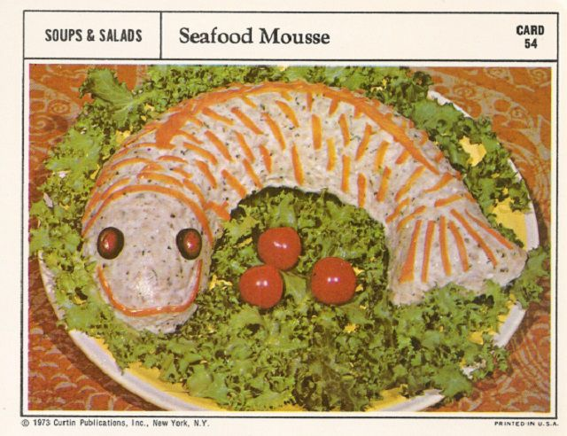

Back
Seafood Mousse

Description:
I swear this is food; people ate this back in the 70's! And why wouldn't you, when it stares at you so appetizingly! Make at your own risk.
Ingredients: (serves 6-8)
- 1 pkg. unflavoured gelatin
- ¼ cup cold water
- ½ cup boiling water
- ½ cup mayonnaise
- 1 tbsp. lime juice
- 1 tbsp. grated onion
- 1 tsp. salt
- ¼ tsp. pepper
- 2 cups fish (halibut, salmon, or tuna), drained and finely chopped
- 1 tbsp. capers, chopped
- 2 tbsps. chopped parsley
- ⅛ tsp dried tarragon
- ⅛ tsp dried, crushed marjoram
- 1 cup heavy cream, whipped
- carrot strips and sliced olives (optional, but heavily recommended)
Procedure: (approx. 1hr)
- Soften gelatin in cold water; add boiling water and stir until gelatin dissolves.
- Leave gelatin to cool a bit before adding more ingredients.
- Add mayonnaise, lime juice, onion, salt, and pepper to the gelatin; mix well and chill to set.
- Before the gelatin sets completely, fold in: fish, capers, parsley, tarragon, marjoram, and whipped cream.
- Pour into an oiled, fish-shaped mold and chill until firm.
- Unmold on a serving platter and, if desired, garnish with carrot strips and stuffed onions.
- Enjoy the horror of biting into this monstrosity, as it gazes emptily into your soul!
Back